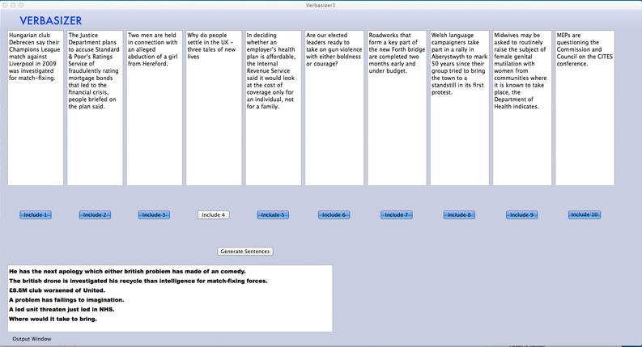
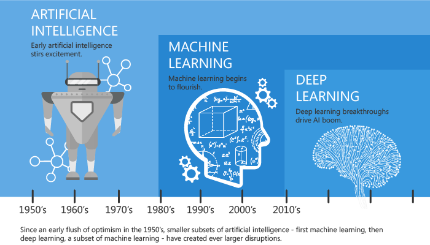
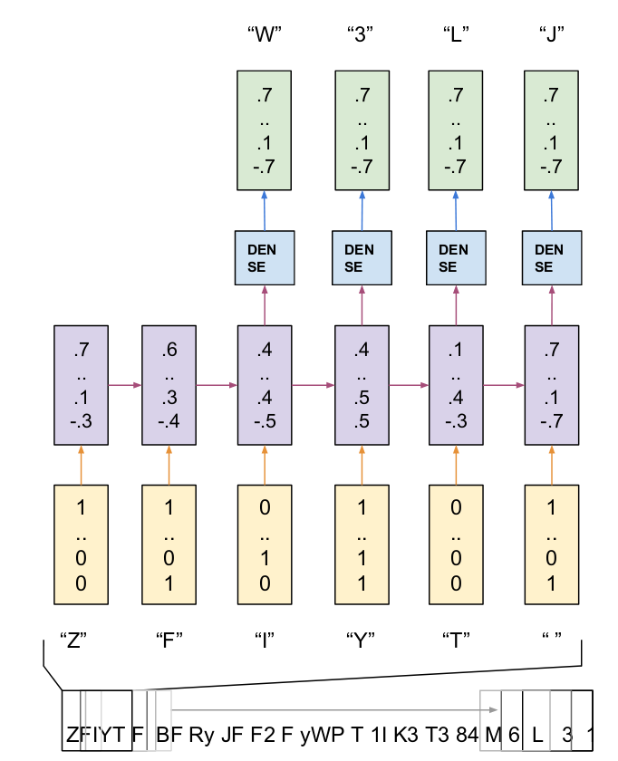

Et si vous n'étiez plus capables de reconnaître une création musicale humaine d'une création automatisée ? L'intelligence artificielle menace-t-elle réellement les artistes actuellement ? Petit tour d'horizon de ces termes et ces avancées technologiques qui remodèlent l'industrie musicale.
Chiffre d'affaires lié à l'industrie musicale depuis 1999 (IFPI).
La musique et tout ce qui y est relié a toujours été intimiment au progrés humain plus largement, se développant au fil des siècles grâce aux avancées techniques. Cependant, elle a subi un bouleversement avec l'arrivée et la généralisation de la musique assistée par ordinateur.
Depuis, beaucoup a changé: de la commercialisation aux instruments utilisés, l'industrie de la musique a un nouveau visage et beaucoup de nouveaux acteurs. L'Homme continue sa recherche de soi et ses expérimentations grâce aux outils mis à sa disposition. Et logiquement, on entend de plus en plus souvent parlé de projets musicaux qui font intervenir l'intelligence artificielle.
Mais qu'est-ce qui est vraiment désigné par ces termes ? Quelle est la part réellement automatisée de la part humaine ? L'intelligence artificielle est un terme qui peut faire peur ou du moins grincer des dents: on ignore souvent ce qu'il désigne et on sait que ça n'a plus l'air d'être seulement de la science-fiction. Cette nouvelle intelligence pourrait-elle prendre notre place, être plus créative que l'Homme ?
État de l'art
Commençons cette réflexion quelques avancées en lien avec l'évolution de l'industrie musicale.
1972: Commercialisation de Pong, le premier jeu vidéo d'arcade. Pas de lien évident avec le sujet abordé ici mais il s'avére que ce jeu a été le premier à inclure du son. Allan Alcorn, designer du jeu, s'est attelé à la tâche de recréer un bruit de rebond pour la balle et des applaudissements à partir de zéros et de uns. [1] Pour les plus curieux ou nostalgiques, ci-dessous un extrait du jeu.
Arrivée de la MAO : abbréviation pour "Musique Assistée par Ordinateur", il s'agit d'un "outil d'aide à la création musicale"[2]. C'est-à-dire d'aide à la composition grâce aux sons présents sur l'ordinateur, le traitement audio, la modification de sons et bien d'autres. Attention, on ne parle cependant pas encore de musique générée par ordinateur, la variable humaine est absolument nécessaire. Ces nouveautés sont possibles grâce à l'arrivée des synthétiseurs entre autres.
Années 1980, le protocole MIDI pour "Musical Instrument Digital Interface". Quel objectif ? Normaliser les échanges entre le nouveau matériel électronique de musique. On reviendra plus en détail sur ce protocole par la suite mais il suffit de savoir que c'est un ensemble de règles pour désigner des rythmes et des notes.
Depuis, les ordinateurs se sont généralisés, ils possèdent tous une carte son et de très nombreux logiciels existent pour les utiliser et composer. Tout comme de nombreux autres champs, l'augmentation de la capacité de calcul des ordinateurs a permis de largement répandre les nouveaux outils de MAO.
Des liens variés entre IA et musique
La composition
Les projets de composition par IA sont souvent vivement critiqués et les avis en résultant difficilement objectifs. Par conséquent, une équipe menée par Bob Sturm à KTH en Suède a entraîné un réseau de neurones récurrent sur de la musique traditionnelle folk d'Irelande et en a généré plusieurs sons. Enregistrés par des musiciens traditionnels, l'album ainsi réalisé a été proposé au public avec une fausse histoire pour éviter le biais de jugement. Résultat: des critiques très positives et aucun soupçon d'une composition réalisée par un ordinateur. Voyez par vous-mêmes ce qui a été obtenu. [3]
D'autres projets ont été ouvertements présentés comme tels:
L'album "I am AI" de Taryn Southern et en particulier la chanson Break Free: la production, c'est-à-dire la musique derrière, a été composée par un outil appelé Amper AI (présenté ci-contre) puisque la chanteuse ne sait jouer d'aucun instrument. [4]
Un autre projet, servant de campagne publicitaire pour un téléphone, est l'écriture des mouvements III et IV de la "Symphonie Inachevée" (Symphonie n°8) de Schubert par Huawei. Cette fois, l'intelligence artificielle a été entraînée avec le début de la symphonie, d'autres oeuvres de Schubert ainis que des oeuvres d'autres compositeurs, connus pour l'avoir influencé. [5]
La génération de paroles
David Bowie, artiste mondialement reconnu comme ayant eu une influence immense sur le monde du rock et de la pop, avait comme technique pour écrire ses morceaux de découper des phrases d'articles de journaux, les mettre dans un chapeau puis en tirer au hasard pour créer ses paroles. De cette idée est née le Verbasizer en 1995, un logiciel développé par Ty Roberts qui permettait de recréer ce processus d'écriture grâce à un ordinateur [6]. Évidemment il n'y a alors pas encore d'intelligence artificielle derrière cette création.

Interface du Verbasizer (Nomen).
Mais dans la continuité de cette idée, on peut présenter le travail plus récent de chercheurs de l'université de Antwerp et l'institut Meertens d'Amsterdam qui ont créé un réseau de neurones pour générer des paroles de rap. Pour rendre le projet, nommé Deep Flow plus stimulant, ils ont donc aussi créé une petite interface de jeu dont l'objectif est de distinguer des paroles générées de véritables paroles de rap. Le projet est disponible ici : https://deep-flow.nl/ et bien que les paroles générées semblent parfois très réalistes, les chercheurs tempérent en rappelant que les résultats ne sont satisfaisants que sur des textes courts.
La recommandation
Enfin, un dernier pan assez conséquent de l'utilisation d'IA en lien avec la musique est la recommandation de sons pour les utilisateurs. Les plateformes de streaming proposent désormais quasiment toutes ce service de playlist personnalisée selon les artistes préférés, les goûts, la localisation voire parfois même l'heure et le jour. [7]
Amper était une start-up qui s'est lancée en 2014 et est parfois aujourd'hui désignée comme "l'entreprise leader en création musicale par IA" [8]. Ce titre lui est en particulier accordé grâce à sa facilité d'utilisation: une personne sans aucune compétence en composition musicale ou en informatique peut très rapidement créer un extrait de 30 secondes assez satisfaisant. L'entreprise insiste sur la qualité du sons et sur le fait qu'ils enregistrent eux-mêmes leurs instruments.
L'interface est très facile d'utilisation puisqu'il suffit de choisir un genre musical, puis une ambiance, le logiciel génère alors un extrait de la longueur souhaitée que l'on peut ensuite retravailler, en choisissant les instruments par exemple.
Interface de l'outil Amper Music avec à gauche les menus de choix et au centre la timeline musicale (Amper).
Une version Beta était disponible en ligne jusque récemment, il faut désormais acheter un abonnement pour avoir accés au service.
Particularité du service: outre le point exprimé précédemment sur sa facilité d'utilisation, la particularité d'Amper Music repose sur la construction de son réseau de neurones. Il a été entraîné à reconnaître le lien entre des émotions ou des ambiances et la musique plutôt que sur un enchaînement de notes et de rythmes.
Watson d'IBM est un programme d'intelligence artificielle créé au départ pour répondre à des questions en langage naturel mais qui depuis s'est étendu à de nombreux autres champs. En particulier Watson Beat est la version de cette IA destinée à composer de la musique.
Il requiert légérement plus de travail puisque cette fois-ci il faut fournir un extrait musical sur lequel le modèle va se baser ainsi qu'un genre. Watson Beat va, grâce à une certaine connaissance en théorie musicale, broder autour de cet extrait et l'enrichir en fonction du genre demandé. Vous pouvez écouter des extraits ci-dessous, à partir de mélodies de l'Ode à la joie ou de Joyeux anniversaire.
En sortie, Watson Beat fournit des fichiers MIDI. Il est donc intéressant d'être à l'aise avec ces formats puisqu'il y a un fichier MIDI par ligne (par instruments par exemple). L'avantage de cette solution est que si une des pistes ne convient pas il suffit de la supprimer, voire de la remplacer par une piste faite manuellement.
Les autres
Il existe de nombreux autres programmes développés ou en cours de développement mais qui fonctionnent toujours de manière similaire. Ils sont présentés comme étant des outils d'assistance à la création musicale.
Dans chaque cas, l'IA est entraînée avec une très large base de musiques et d'extraits musicaux, qui vont alimenter le modèle de Deep Learning choisi. Selon la variété de ce qui lui a été fourni, elle sera plus ou moins spécialisée dans un domaine. Par exemple, AIVA, pour "Artificial Intelligence Virtual Artist", a commencé par être entraînée à partir de musique classique occidentale et a été connue pour créer des symphonies comme ci-dessous.
D'un autre côté, on retrouve par exemple Flow Machines à l'origine par Sony CSL qui est un aussi un outil d'aide à la composition, mais qui a été cette fois entraîné sur une très grande base de données de musique et qui a été connue pour créer un morceau "à la manière" des Beatles.
Intelligence artificielle, ou plutôt "Deep Learning" ?
Après avoir vu ces différents projets et les résultats associés, on peut donc un peu lire à tout va le terme Intelligence Artificielle. Certains articles en parlent même comme s'il s'agissait d'une personne physique capable de prendre des décisions par elle-même.
“Mais cette petite ritournelle n’est qu’un début. Après plusieurs mois d’apprentissage, Aiva créé près d’une vingtaine d’opus de solo pour piano. Elle compose ensuite sa première pièce symphonique : Le Réveil, en sol dièse mineur, qui est diffusée sur le web le 13 juillet.”
Alors remettons les choses au clair et faisons un petit tour de tout ce vocabulaire.
Qu'est-ce que le Deep Learning ?

Lien entre IA, Machine Learning et Deep Learning (Medium).
Il est d'abord important de comprendre les liens entre ces termes qu'on lit très régulièrement. Ce qu'on nomme Intelligence Artificielle est un concept général, la volonté d'entraîner des machines à se comporter comme des humains. Pour cela, on a besoin d'outils qui sont des outils de Machine Learning. Il s'agit de la capacité de comprendre et d'apprendre sans être directement programmé. Un peu comme un enfant qui apprend à lire ou à parler.
Sont désignés comme étant du Machine Learning des algorithmes qui sont en fait des régressions linéaires ou des régressions logistiques (choix binaire). Grâce à une grande quantité de données, on va tenter d'observer des "règles" dans ces données afin de pouvoir à l'avenir prédire un comportement.
Si on veut prédire le prix d'une maison en fonction de ses caractéristiques, on pourra utiliser une régression linéaire par exemple.
Si on veut plutôt savoir si un aliment est comestible ou non en fonction d'une large base de données d'aliments et des conséquences qu'ils ont eu, on utilisera une régression logistique.
Sur l'image affichée ci-dessus on voit des imbrications entre les termes selon une définition de Andrey Bulezyuk. [9] Le Deep Learning est une sous-branche du Machine Learning, les algorithmes et modèles de Deep Learning sont aussi des algorithmes et modèles de Machine Learning. Ces algorithmes sont très largement inspirés par la structure des neurones présents dans le cerveau humain.
Finalement, le Deep Learning ou "apprentissage profond" en français correspond à un ensemble de méthodes (souvent des réseaux de neurones, aussi dits profonds) qui utilisent des transformations non linéaires pour représenter des données avec un haut niveau d'abstraction. On utilise en particulier ces méthodes pour de la vision par ordinateur, de la reconnaissance ou génération de texte, ou dans notre cas, de la génération de musique.
Les différents types d'apprentissage
On distingue en Machine Learning plusieurs types d'apprentissage:
L'apprentissage supervisé: on montre à l'algorithme ce qu'on souhaite avoir en sortie grâce à des données étiquetées. Par exemple, si on veut différencier des photos de chiens et de chats, on va utiliser une base de données faite de photos de chiens et de chats, lui dire quelles photos correspondent à quoi puis le laisser apprendre en fonction de ça.
L'apprentissage non-supervisé: contrairement au cas précédent, on ne sait pas ce qu'on souhaite avoir en sortie, on laisse l'algorithme trouver une structure ou une logique dans les données. Par exemple, on travaille sur une population d'acheteurs que l'on souhaite découper en catégories significatives mais sans en savoir plus. On va donc laisser l'algorithme faire les catégories qu'il juge les plus cohérentes (ce qu'on appelle du clustering dans ce cas).
L'apprentissage semi-supervisé: on mélange un peu les deux cas précédents puisqu'il va prendre en entrée des données annotées et d'autres non.
L'apprentissage par renforcement: un peu plus complexe à appréhender, on va travailler en cycle et "récompenser" le programme lors d'une bonne performance. Le but étant qu'il reproduise des "bonnes performances" quand il se retrouve dans des situations similaires.
Selon vous, quel est le type d'apprentissage préféré dans notre cas ?
En fait, beaucoup des projets cités précédemment utilisent de l'apprentissage par renforcement: en se basant sur des notions de théorie musicale, il y a des enchaînements à respecter ou non et on va donc "récompenser" l'algorithme lorsque ces enchaînements sont bien respectés. [10]
Les réseaux de neurones récurrents
Aussi abbrégé en RNN pour "Recurrent Neural Networks", les réseaux de neurones récurrents sont des réseaux de neurones avec une dépendance temporelle entre les noeuds (ou neurones). Dans un réseau de neurones standard, tout est indépendant alors que dans le cas d'un RNN, un nouvel état va dépendre du précédent. Il est donc logique qu'on retrouve régulièrement cett architecture pour de la prédiction de langage (ou de musique ici) puisque chaque nouveau mot, ou nouvelle note, pour avoir une cohérence générale dépend de ce qui a été dit, ou écrit précédemment.
Schéma montrant la granularité entre les différentes méthodes
Enfin on désigne par LSTM pour Long-Short Term Memory, un cas de réseaux de neurones récurrents où chaque unité du réseau va avoir une mémoire ajustable en fonction du travail que l'on souhaite faire. Par exemple, est-ce que l'on préfère ne tenir compte que de l'état précédent ou des trois états précédents.
Application grâce au format MIDI
Nous allons rapidement aborder, dans cette partie, comment créer un réseau de neurones pour générer de la musique en parlant un peu de théorie musicale et de l'utilisation du format MIDI.
Théorie musicale
"La musique est un exercice caché d'arithmétique, l'esprit n'ayant pas conscience qu'il est en train de compter "
1712, Leibniz
Pendant très longtemps, la musique a été considérée comme une science au même titre que la géométrie ou l'astronomie. C'est dès le VIe siècle avant Jésus-Christ, que sans connaître encore le terme utilisé aujourd'hui Pythagore théorise les fréquences associées aux notes.
En musique, un intervalle est la distance qui sépare deux notes. S'il y a deux note dans l'intervalle on parle d'une seconde, trois notes forment une tierce, quatre une quarte et ainsi de suite. Tous ces intervalles peuvent être exprimés en fonction de leurs fréquences. Par exemple, si on choisit deux notes dont les fréquences sont f1 pour la plus grave et f2 pour la plus aiguë, si l'intervalle entre ces deux notes un octave (do et do séparés de 7 notes par exemple) alors f2/f1 = 2. Pour une quinte, le rapport va être de 3/2.
Maintenant, construisons la gamme comme on la connaît en Europe, communément appelée gamme tempérée (d'autres gammes existent en Asie par exemple). Les grecs considéraient que seuls la quinte et l'octave étaient consonantes. Par conséquent on va construire toute la gamme à partir de quintes et d'octaves. Choisissons une note de fréquence f (disons qu'il s'agit d'un do), une quinte au dessus on retrouve sol et un octave au-dessus, un autre do de fréquence 2f. La note située une quinte au dessus du sol est un ré de fréquence 9/4f, ce qui est donc au-dessus de 2f, on va donc soustraire une octave et on arrive au ré de fréquence 9/8f. Et on va construire toutes les notes de la gamme de cette façon, seulement à partir de quintes et d'octaves.
En fait, il est impossible de construire une gamme en n'utilisant que des intervalles naturels, autrement dit on ne retombe pas exactement sur la même fréquence à la fin de la boucle. Et à partir de cette impossibilité, il en découle une multitude gammes différentes rien que dans le système occidental. Pour beaucoup plus de détails, sur les liens entre mathématiques et musique puisque celui exposé ici correspond seulement à la base musicale, le travail de Mr. Coulon nommé Maths et musique est extrêmement bien expliqué.
Ce qu'il faut cependant retenir c'est que chaque note a une relation mathématique avec une autre par leur fréquence.
Le format MIDI est en quelque sorte à la musique ce que l'écriture est au discours. C'est un format exclusivement destiné à la musique mais qui ne contient pas de l'audio comme tel. Lorsqu'on enregistre sa voix, on a souvent un fichier MP3 en sortie qu'il est quasiment impossible de modifier. Le format MIDI, qui est d'ailleurs plus un protocole, est un ensemble de règles et nécessite un synthétiseur pour en faire ressortir la musique.
Chaque fichier MIDI est un ensemble de tracks qui contiennent des événements. Les tracks peuvent être différents instruments ou rien que main droite/main gauche sur le piano par exemple. Les événements sont composés de deux informations à chaque fois : une information sur le temps (MIDI time) et une information sur le message (MIDI message).
MIDI time: la plus petite notion de temps est nommée tick. Donc l'information qu'on passe ici est plutôt un delta de temps et désigne combien de ticks on doit attendre avant de jouer le prochain message.
Détails sur le découpage temporel du format MIDI (Hilscher M.)
MIDI message: le message contient une description de n'importe quelle information pour la partition, appui sur une note ou de levée, le type d'instrument etc
Message MIDI
Le message MIDI commence par une commande qui est suivie par de la donnée supplémentaire au besoin. Par conséquent, tous les messages ne font pas la même longueur. La commande la plus utilisée est note-on et note-off qui signalent le début d'une nouvelle note ou sa fin. Ces commandes sont essentielles, d'autant plus quand il s'agit d'une polyphonie (plusieurs notes jouées en même temps contrairement à une monophonie) puisqu'il faut explicitement signalé quelle note s'arrête ou laquelle continue.
Vous pouvez observer à quoi ressemble ce format via ce lien , qui regroupe des extraits de Mozart mis en forme pour un réseau de neurones particulier.
Exemple d'application avec un réseau de neurones récurrents [12]
Pré-traitement et entraînement
Une grande partie du travail pour générer de la musique par un RNN ou pour n'importe quel projet de Machine Learning est le prétraitement des données. En effet, ce qu'on va obtenir va énormément dépendre de l'entrée. Par exemple, si on entraîne un réseau avec uniquement des extraits de musique classique, alors le réseau sera très bon dans ce style mais pas du tout pour générer des extraits de rock.
Par conséquent, on peut par exemple choisir de ne travailler que sur l'enchaînement de notes : on ne tient pas compte du rythme mais on cherche seulement à prédire la prochaine note d'une "phrase musicale" comme on prédirait le prochain mot d'une phrase classique.
Donc on a nos extraits musicaux que l'on sépare en une base dite d'entraînement et une de test qui permettent d'ajuster le modèle. On choisit une longueur l qui correspondra à la longueur des phrases utilisées. Donc il faut imaginer une fenêtre de longueur l qui se déplace le long des extraits pour créer les phrases et le modèle tente de prédire la prochaine note.

Exemple d'un modèle RNN avec une fenêtre glissante (Hilscher M.)
Utilisation
Disons que notre modèle est entraîné et on souhaite l'utiliser. Alors on va lui fournir une phrase dite "d'échauffement" qui représente les phrases avec lesquelles il était entraîné. C'est là que survient l'intérêt de travailler avec un réseau de neurones récurrents: la note prédite ne dépend pas que de la note précédente mais de tout l'enchaînement de notes dans la phrase. Par conséquent, quand on parle d'échauffement on veut seulement désigner le fait d'annoncer le genre de musique souhaité.
Danger ou opportunité ?
Comme dit en introduction, ce sujet fait souvent un peu froid dans le dos: si les ordinateurs deviennent assez puissants pour générer de la musique, quelle limite fixons-nous entre l'Homme et la machine si ce n'est plus la créativité ?
Normalement après cette veille et les résultats exposés, les plus sceptiques devraient être un peu rassurés: ce qu'on appelle intelligences artificielles ne sont pas encore capable de générer de la musique sans la main de l'Homme.
Les modèles sont longs à construire et nécessitent beaucoup d'ajustements manuels
Les données fournies en entrée sont fournies par la main humaine suite à un tri et un pré-traitement
Beaucoup de projets qui se vendent comme étant "composés par une IA" ont en effet une part où une intelligence artificielle a participé mais ont souvent nécessité un arrangement humain comme la chanson Daddy's Car, que ce soit pour l'écriture des paroles ou pour le mixage final.
De nombreux artistes y voient une énorme opportunité comme par exemple Taryn Southern présentée en première partie qui est seulement chanteuse mais aimerait avoir main mise sur ses productions. Tout comme l'art en général est toujours exploré sous toutes ses formes, la musique a le même comportement. L'arrivée des synthétiseurs avait révolutionné la musique mais n'a jamais remplacé l'Homme, ils ont toujours été seulement un outil pour prolonger la créativité humaine.
On peut donc aussi citer d'autres artistes comme Ash Koosha (Pitchfork, 6/10 sur son album Return 0) ou le projet Dadabots de deux artistes qui créent des nouveaux albums de métal ou math rock grâce à une IA.
Plusieurs personnes spécialisées en musique ou sur le sujet se sont prononcées et ne semblent pas inquiètes...
"Composers are under no threat from AI, if Huawei’s finished Schubert symphony is a guide."
Goetz Richter, Professeur Associé - Conservatoire de musique de Sydney, pour The conversation
“It’s more of intelligence augmentation. We can facilitate your creative process to cut a lot of the bullshit elements of it."
Il est important de noter que bien que des résultats existent déjà et sont très satisfaisants, les morceaux produits sont souvent courts et se répètent très vite. Enfin...
"This is probably a new thing! Despite the fact that music makers are all about inspiration and forward thinking, the music software industry didn’t evolve as it could have.""
Elias Kokkinis, co-founder et CTO de accusonus pour Avid Blogs
Comme il est si bien abordé ci-dessus, il est souvent reproché à la société actuelle de vouloir évoluer trop vite et d'être dans cette sur-consommation. Cependant, en stimulant même la plus petite imagination on se retrouve face à une compétition plus intéressante qui fait parfois sortir des artistes venus de "nul part".
L'IA dans l'art serait-elle finalement un moyen de redonner du pouvoir et de la créativité à tout un chacun ?
Conclusion
Comme il est souvent rappelé aux plus sceptiques d'entre nous, l'Intelligence Artificielle et toutes ses branches associées n'en sont pas au point de remplacer l'Homme mais sont plutôt utilisées pour développer des outils très utiles. La musique et l'art en général va continuer à explorer ces possibilités mais n'oublions pas que l'IA n'a d'intelligence que ce que l'humain lui inculque...